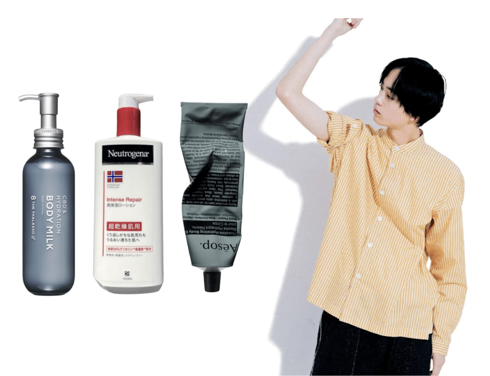

最近お気に入りのスキンケアルーティン。毎日のケアが未来の肌を作ります。保湿が何より大事！ #スキンケア #メンズ美容
【医療用レベルの保水成分配合】乾燥肌のバリア機能を根本から整える、低刺激ロジックのボディクリーム。
大学の講義ノートは全部iPadで一元管理しています。おすすめのノートアプリ5選をブログで紹介中。 #iPad #ガジェット #大学生の日常

【触れたくなる素肌へ】カサつく肌のストレスから解放。心地よい潤いで、毎日の自分にもっと自信を。